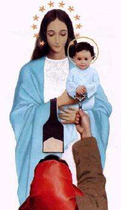
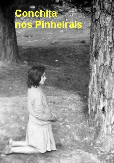
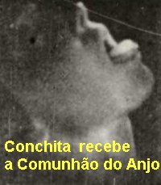
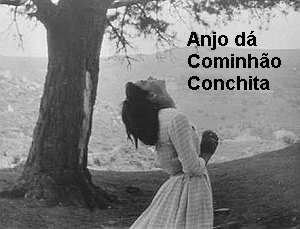

são apresentadas com uma maior explicação:
são apresentadas com uma maior explicação:


No dia 17 de Agosto, no mesmo horário à noite, a VIRGEM apareceu e disse que ia rezar o Terço com as meninas. Mas desta vez, descreve Conchita, não ficamos no “Cercado”, NOSSA SENHORA quis que fizéssemos a “marcha extática” e percorrêssemos, de pinheiro em pinheiro, todos os lugares onde Ela tinha aparecido, desde o inicio das manifestações sobrenaturais. Depois da Aparição as pessoas contavam, que as meninas pareciam que estavam com rodinhas nos pés e que todo o povo se esforçava em acompanhá-las. Uma boa parte conseguiu, mas muita gente se cansou e ficou para trás.Assim, atendendo ao Arcanjo, as “meninas videntes” foram aos “Pinheirais” levando uma “menina testemunha” . Quando lá chegaram apareceu o Arcanjo com um Cálice de ouro, e disse: - “Vou lhes dar a Sagrada Comunhão. Estas hóstias estão consagradas. Rezem o PAI NOSSO”.
Quando elas contaram a nova experiência, as pessoas não acreditaram, principalmente os sacerdotes, e eles argumentavam não ser possível porque os Anjos não podem consagrar. Eles se esqueceram, que pela Vontade de DEUS, os Anjos podem entrar em qualquer Igreja, abrir o Sacrário e retirar partículas de JESUS SACRAMENTADO, quantas quiserem!
Na sequência NOSSA SENHORA mandou que se estabelecesse o hábito das meninas irem ao “Quadrado na Calleja” a rezar o Terço, sendo acompanhadas pelo povo. Escolheram horários diferentes, considerando também as possíveis disponibilidades das pessoas. Ela queria que as meninas e as pessoas, fizessem isto por penitência, pelos próprios pecados e por aqueles que não rezam e não acreditam nas Aparições.
No dia 22 de Junho, aconteceu uma surpresa.
No dia seguinte, dia 19 de Junho, como não havia a Santa Missa, Conchita foi rezar o Terço no “Quadrado” e depois foi rezar “Uma Estação” na Igreja. Mas antes de chegar a Igreja, o Arcanjo lhe apareceu, e como de costume, muito sorridente lhe disse:
CONCHITA RECEBE DO ARCANJO A SAGRADA COMUNHÃO
Chegou dia 22 de Junho e Conchita em êxtase nos Pinheirais ouviu a voz que lhe disse:
Conchita
esclareceu que não disse nada a respeito do assunto, a mais ninguém. Somente
sabiam do fato as outras três meninas, a mãe dela e a sua tia. 
Então, chegando o dia 6 de Julho, Conchita tinha que anunciar a data do Milagre. E ela anunciou da melhor maneira, inclusive enviando pequenas cartas, como comunicados.
O número de forasteiros presentes em Garabandal, neste dia, estava entre duas mil e três mil pessoas. O fato aconteceu assim:

acompanhar as anunciadas Aparições em Garabandal. Primeiro filmou Conchita com a boca aberta e a língua de fora totalmente limpa. E sem interromper a filmagem, focalizou o momento em que surgiu a Hóstia Sagrada na língua dela. O senhor Bispo de Santander, D. Eugenio Beitia Aldazabal, se interessou pelo filme e escreveu ao senhor Alejandro Damians solicitando uma copia que "podia ser de grande interesse e serviço a Igreja". Ele enviou o filme original de presente ao senhor Bispo.Assim que ela fechou a boca, ainda em êxtase, apareceu NOSSA SENHORA e conversando, Ela disse a Conchita:
O MISTÉRIO DA DESCRENÇA

assustadas e tristes, dizendo que não permitiriam tal acontecimento. Mas a VIRGEM confirmou, acrescentando que acontecerá que os pais delas não estarão bem, por circunstâncias diversas, e que por isso também, algumas das meninas chegarão a negar ter visto NOSSA SENHORA e o Arcanjo São Miguel!Aqui devemos colocar em evidência a extraordinária “força demoníaca”, que sempre quer interferir nos planos de DEUS, para confundir e destruir a humanidade. Por isso, sem que possamos entender, a misericórdia infinita do SENHOR que cerca todos os acontecimentos, às vezes permite, num determinado nível, a atuação de satanás com suas insólitas tentações, de modo que o maligno ao agir, com o consentimento Divino, ensejará aparecer em plenitude à grandeza da graça de DEUS, confirmando a Obra que o SENHOR realiza. Foi assim que o maligno pode agir e atuar na consciência das meninas, a ponto de mudar a sua convicção interior, mascarando a realidade dos fatos que aconteceram, lançando uma terrível dúvida em seus pequenos e humildes corações. Não entendemos a profundidade da misericórdia do SENHOR, como também não temos capacidade para compreender muitos mistérios de DEUS. Mas, sem dúvida, toda interferência no Plano Divino, só é possível com o consentimento de DEUS, que utilizará aquele recurso para a santificação das pessoas e pleno conhecimento da verdade.
Conchita teve Aparição da VIRGEM nesta mesma noite, e seguiu normalmente com os encontros até 20 de Janeiro de 1963.
Na verdade, também Conchita atravessou umas “noites escuras” de dúvidas, que balançaram o seu coração. Aparentemente, não foi tão violenta como das outras meninas, mas, principalmente nasceu nela uma forte dúvida sobre o “Grande Milagre”. A tentação em todas as oportunidades invadia o seu cérebro e a deixava prostrada, com a cabeça até meio tonta, e pensando: será que vai acontecer mesmo?
Um dia, estando em casa, no seu quarto, ouviu uma voz que disse:
Disse Conchita:
Desde então, Conchita nunca mais duvidou, e somente ela via NOSSA SENHORA e o Arcanjo.